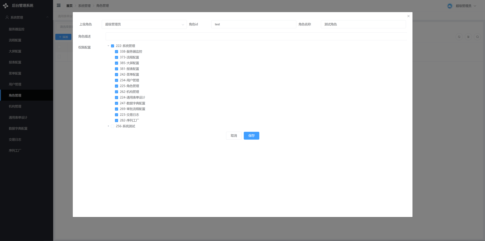

介绍
入门
基础功能
用户管理
角色管理
机构管理
菜单配置
数据字典
表单配置
起步
界面介绍
基础知识
容器控件
输入控件
选择控件
上传控件
其他控件
快速创建
变量配置
大屏配置
流程配置
报表配置
关于
本书使用 GitBook 发布
角色管理
角色管理

角色用来控制菜单权限。
添加或修改角色可通过勾选目录树菜单来实现为角色分配菜单权限。
可在用户管理里为用户分配角色，从而使用户拥有菜单权限。
新添加的菜单需要先配置角色并分配给用户才能看到（超级管理员除外）。
results matching "
"
No results matching "
"